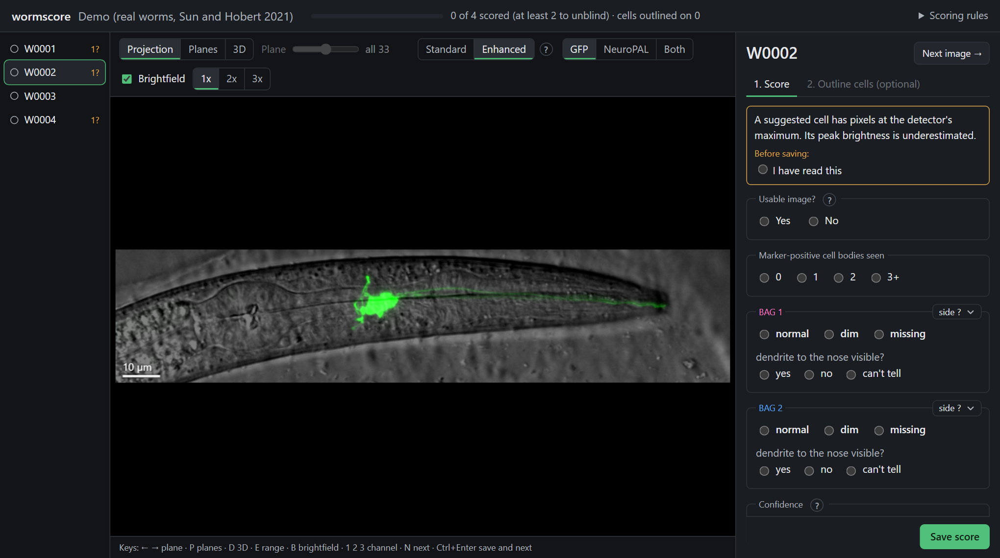
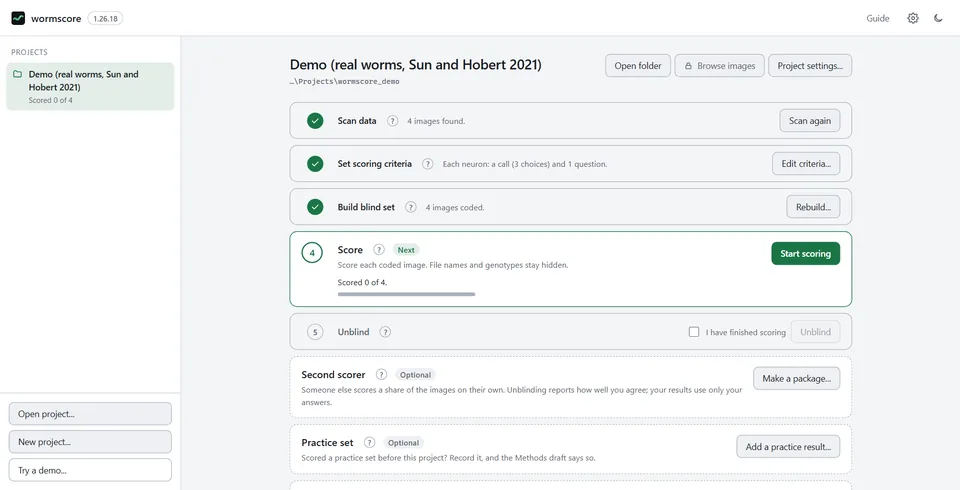

wormscore
Blind scoring of fluorescent neurons in C. elegans microscope images.
You score coded images without knowing the genotype. wormscore keeps the genotype key sealed, measures the cells, and writes the tables, the tests and a draft Methods paragraph when you unblind. Free and open source.

How it works
A project has five steps. The app's home page shows them in order.
Scan data
Lists every image with its metadata and which channel is which.
Set scoring criteria
Choose what to answer for each image. Start from a template or build your own.
Build blind set
Gives every image a random code and writes the sealed key.
Score
Answer the questions for each coded image, and outline cells to measure them if you like.
Unblind
Reveals the genotypes and writes the results, the tests and a draft Methods paragraph.

Reads microscope files as they are: Leica .lif, Zeiss .czi,
Nikon .nd2, Olympus .oib, .oif and .oir, OME-TIFF and
ImageJ hyperstack TIFF. The reporter channel is read from the file's metadata, never guessed.
Nothing is tied to one neuron, marker or organism.
Why it matters
Blind until you finish
Genotypes and file names stay in a sealed key until scoring is done. No genotype or file name reaches the scoring page.
Hidden repeats
Some images can come back a second time under new codes. Unblinding reports how consistently you scored them.
A second scorer
Send a colleague some of the coded images, without the key. Unblinding reports how well you agree.
Every step logged
Every parameter and software version goes into the project's log.md. Every number links to its file and SHA-256 checksum.
Methods you can check
The draft Methods paragraph is built from the project files. The Methods document explains how everything is read, measured and tested.
Measured, not decided
Suggested cells and the ones you outline are measured, but the numbers stay hidden while you score. The software never makes a call for you.
Install
The apps are not signed, so Windows and macOS ask before opening them the first time.
Windows
- Unzip the download and double-click
wormscore.exe. - If you see
Windows protected your PC
, click More info, then Run anyway. If you seeThe publisher could not be verified
, click Run.
Needs Windows 10 or 11.
With Python
On any system with Python 3.12 or newer, including Intel Macs and Linux:
pip install wormscore
wormscore-launcherFor Nikon .nd2 files: pip install "wormscore[nd2]".
Mac
- Unzip the download and drag
wormscore.appinto Applications. - Double-click it. In the warning, click Done (not Move to Trash).
- Open System Settings > Privacy & Security, scroll down to Security and click Open Anyway next to wormscore. The button shows only after step 2; if it is not there, do step 2 again.
- Click Open Anyway again and confirm with your password or Touch ID.
Or run this once in Terminal instead. It removes the mark macOS puts on downloaded files and changes nothing else:
xattr -dr com.apple.quarantine /Applications/wormscore.appNeeds a Mac with Apple silicon (M1 or newer). The app opens in your web browser. Use a normal window: Safari Private windows, Brave and Firefox with fingerprinting protection change the image data.
New to wormscore? Click Try a demo... in the app. It has 20 simulated worm heads in two genotypes, with the answers to check your calls against. The user guide covers every step.
Cite
If you use wormscore in research, please cite the version you used. The citations below name the latest version; in the app, Settings > Copy citation gives the one you have. The DOI 10.5281/zenodo.23520610 covers all versions, and each release also has its own.
Bansal, A. (2026). wormscore: blind scoring and fluorescence measurement of neurons in confocal z-stacks (Version 1.26.27) [Computer software]. https://doi.org/10.5281/zenodo.23520610
@software{Bansal_wormscore_2026,
author = {Bansal, Arjun},
doi = {10.5281/zenodo.23520610},
title = {{wormscore: blind scoring and fluorescence measurement of neurons in confocal z-stacks}},
url = {https://github.com/arjunkai/wormscore},
version = {1.26.27},
year = {2026}
}Privacy
wormscore runs on your computer. Your images, projects and scores never leave it.
The app goes online for three things only:
- checking for updates: one request to GitHub for the latest version number, which sends nothing about you or your projects (you can turn this off in Settings)
- installing an update you choose
- downloading the optional real-worm demo images